청소년상담사-1급(1교시)(구) (2015-03-28 기출문제)
1과목: 상담사 교육 및 사례지도
1. 다음에서 설명하는 것은?
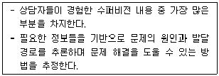
- 사례개념화
- 상담과정 기술
- 상담개입 기술
- 상담의 구조화
- 가설 검증
(정답률: 알수없음)

2. 자신만의 수퍼비전 접근법을 개발할 때에 필요한 사안을 모두 고른 것은?
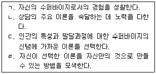
- ㄱ, ㄴ
- ㄱ, ㄷ
- ㄴ, ㄷ
- ㄱ, ㄴ, ㄹ
- ㄱ, ㄴ, ㄷ, ㄹ
(정답률: 알수없음)
3. 에이첸필드(G. Eichenfield)와 스톨튼버그(C. Stoltenberg)(1996)의 연구에 의하면 수퍼비전을 실시할 때 가장 다루기 어려운 유형의 수퍼바이지는?
- 상담경험이 부족하고 수퍼비전 경험도 부족한 유형
- 상담경험이 풍부하고 수퍼비전 경험이 부족한 유형
- 상담경험이 부족하고 수퍼비전 경험이 풍부한 유형
- 상담경험이 풍부하고 수퍼비전 경험도 풍부한 유형
- 상담경험에 상관없이 수퍼비전에 호의적인 유형
(정답률: 알수없음)
4. 상담자가 직면할 수 있는 위기상황에 관한 수퍼바이저의 역할에 해당하지 않는 것은?
- 내담자가 자신을 위험에 몰아넣을 수 있는 위기에 대해 설명하도록 상담자를 도와야 한다.
- 내담자가 타인을 위험에 몰아넣을 수 있는 위기에 대해 설명하도록 상담자를 도와야 한다.
- 내담자에게 취하는 적절한 조치에 대해서 관여하지 않고 상담자의 자율성을 존중한다.
- 상담자가 내담자와 주변사람들의 안전 보장을 최우선으로 하도록 한다.
- 상담자로 하여금 내담자의 위기관리에 대해 상담일지에 기록하도록 한다.
(정답률: 알수없음)
5. 개인적 결함이 있는 수퍼바이지가 훈련을 잘 수행하지 못하는 경우에 수퍼바이저의 올바른 태도는?
- 수퍼바이지가 자신의 상황을 잘 인식하도록 직면한다.
- 개인적 문제를 해결할 수 없으므로 상담장면에 들어오지 않도록 조치한다.
- 문제는 누구나 있는 것이므로 굳이 문제를 들추기보다 수용한다.
- 수퍼바이지의 문제를 승화시키도록 격려한다.
- 수퍼바이저와 수퍼바이지간의 평행 과정(parallel process)의 관점에서 보려고 노력한다.
(정답률: 알수없음)
6. 집단 수퍼비전의 장점이 아닌 것은?
- 집단구성원이 제공하는 다양한 시각을 갖게 된다.
- 초보상담자는 경력상담자를 관찰함으로써 학습한다.
- 수련생 개인의 발달수준에 따른 맞춤학습이 가능하다.
- 집단상담의 요소가 있어 시간이 경과함에 따라 수퍼바이지의 성장에 영향을 미친다.
- 경력상담자는 초보상담자와의 상호작용을 통해 학습한다.
(정답률: 알수없음)
7. 다음의 내용으로 수퍼비전을 수행하는 치료적 접근은?
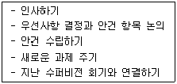
- 현실치료
- 행동치료
- 체계적 치료
- 해결중심치료
- 인지행동치료
(정답률: 알수없음)
8. 수퍼바이저와 수퍼바이지 간의 성적 관계에 관한 대처방법으로 옳은 것은?
- 성적 자유는 인간의 기본권에 해당하므로 성적 친밀감을 표현하는 것은 개인의 권리이다.
- 수퍼바이저는 전문가로서의 역할 모델이 된다는 점을 자각하고 성적 관계를 금지해야 한다.
- 전문적인 삶과 개인적인 삶은 서로 경계를 유지해야 하므로 전문적 차원과 분리된 개인적 사생활 차원에서 성의 자유를 누릴 수 있다.
- 인간은 근본적으로 본능적인 존재이므로 성에 관련한 행위를 표출하는 것은 자연스럽다.
- 성은 인간이 표현할 수 있는 최고의 친밀한 행위이므로 배우자가 없는 상황이라면 성적 관계를 금지할 이유가 없다.
(정답률: 알수없음)
9. 각 사례에서 활용하고 있는 수퍼비전의 이론적 근거를 순서대로 바르게 짝지은 것은?
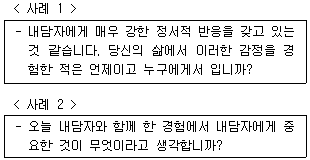
- 게슈탈트 - 인간중심
- 정신역동 - 게슈탈트
- 게슈탈트 - 의미치료
- 인간중심 - 게슈탈트
- 정신역동 - 인간중심
(정답률: 알수없음)
10. 공개사례발표에서 상대적으로 비중이 낮은 수퍼바이저의 역할은?
- 교사
- 평가자
- 치료자
- 멘토
- 토론자
(정답률: 알수없음)
11. 수퍼바이저의 비윤리적 행동을 모두 고른 것은?
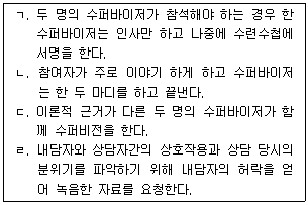
- ㄱ, ㄴ
- ㄱ, ㄷ
- ㄴ, ㄹ
- ㄱ, ㄴ, ㄷ
- ㄴ, ㄷ, ㄹ
(정답률: 알수없음)
12. 수퍼비전을 시작하기 전에 사전동의에서 다루는 주제를 모두 고른 것은?
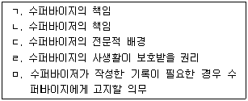
- ㄱ, ㄴ
- ㄷ, ㄹ, ㅁ
- ㄱ, ㄴ, ㄹ, ㅁ
- ㄴ, ㄷ, ㄹ, ㅁ
- ㄱ, ㄴ, ㄷ, ㄹ, ㅁ
(정답률: 알수없음)
13. 수퍼바이지의 효율적인 다문화 상담을 위해 수퍼바이저가 개발해야 하는 다문화적 유능성에 해당하지 않는 것은?
- 다문화 수퍼비전도 일반 수퍼비전과 다르지 않다는 확신
- 수퍼바이지와 내담자의 종교적 신념과 가치에 대한 존중
- 수퍼바이지가 속한 문화와 내담자가 속한 문화가 일치하는 관계 기술의 활용
- 다문화 집단에 대한 왜곡된 생각의 제거
- 지역사회 내에서 다문화 집단과 상호관계 맺기
(정답률: 알수없음)
14. 1급 청소년상담사의 역할을 모두 고른 것은?
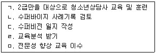
- ㄷ, ㄹ
- ㄱ, ㄴ, ㄷ
- ㄴ, ㄷ, ㅁ
- ㄴ, ㄷ, ㄹ, ㅁ
- ㄱ, ㄴ, ㄷ, ㄹ, ㅁ
(정답률: 알수없음)
15. 수퍼비전동맹에 관한 설명으로 옳지 않은 것은?
- 수퍼바이지의 개인적 이슈를 다룰 때 중요하다.
- 치료동맹에 영향을 주는 요인들이 수퍼비전동맹에도 영향을 준다.
- 수퍼비전동맹의 일차적 책임은 수퍼바이저에게 있다.
- 치료적 동맹은 관계의 독립성을 강조한다.
- 수퍼바이지의 관계적 역량을 훈련할 때 중요하다.
(정답률: 알수없음)
16. 수퍼바이저가 윤리적인 결정을 내리는 과정에서 취해야 할 행동으로 옳지 않은 것은?
- 가능한 한 많은 정보를 수집한다.
- 문제를 인식하고 그 문제의 성격을 구체화한다.
- 영향을 받게 될 모든 사람들의 권리, 책임, 복지 등을 평가한다.
- 관련 법규에 대한 최신 정보를 습득한다.
- 자문을 구하기보다는 비밀을 유지한다.
(정답률: 알수없음)
17. 수퍼비전에서 사용되는 정보에 관한 설명으로 옳지 않은 것은?
- 초보 수퍼바이지는 직접 관찰이 가능한 자료가 유용하다.
- 음성 녹음자료의 부분을 선택하고자 할 때에는 수퍼비전 상황에서 선택하여야 한다.
- 숙련된 수퍼바이지의 자기보고는 유용하다.
- 수퍼바이지의 과정노트와 사례노트를 사용함으로써 이득을 얻을 수 있다.
- 수퍼바이지가 수행한 상담장면에 대한 영상자료는 많은 정보를 제공해 준다.
(정답률: 알수없음)
18. 자살 시도를 한 청소년 내담자가 부모에게 알리지 말라고 수퍼바이지에게 부탁한 경우 수퍼바이저가 취해야 하는 개입 방법이 아닌 것은?
- 내담자가 부모에게 알리고 싶지 않은 이유를 탐색했는지 확인한다.
- 자살 충동이 있을 경우 긴급하게 연락할 수 있는 연락처를 제공하였는지 알아본다.
- 내담자에게 사전동의한 내용을 다시 확인시키도록 한다.
- 즉각적으로 해결책을 제공하여 수퍼바이지를 안심시킨다.
- 수퍼바이지가 속한 조직의 상급자 또는 수퍼바이저에게 보고하도록 한다.
(정답률: 알수없음)
19. 수퍼바이저와 수퍼바이지 사이의 갈등에 관한 설명으로 옳은 것은?
- 수퍼비전 관계의 성격, 방식, 규칙을 수립했던 계약서를 활용하는 것이 도움이 된다.
- 수퍼바이저가 힘과 권위를 가진 관계이기 때문에 쉽게 갈등이 일어나지 않는다.
- 수퍼비전에서의 역할 갈등은 초급 수퍼바이지에게 많이 나타난다.
- 수퍼비전에서의 갈등은 가급적 다루지 않는 것이 장기적으로 도움이 된다.
- 수퍼비전에 대한 상호간의 기대가 분명할 때, 수퍼바이지는 역할 모호성을 크게 느낀다.
(정답률: 알수없음)
20. 수퍼비전에서 수퍼바이지의 저항에 영향을 미치지 않는 것은?
- 수퍼바이저에 대한 수퍼바이지의 신뢰
- 수퍼바이지에 대한 내담자의 기대
- 수퍼바이저와 수퍼바이지 간의 평행 과정
- 수퍼바이지의 발달 수준
- 과제와 목표의 동의
(정답률: 알수없음)
21. 수퍼비전에서 사용되는 개입 기술에 관한 설명으로 옳은 것은?
- 수퍼바이저가 수퍼바이지, 수퍼비전 관계에 대한 느낌을 말하는 것은 공감이다.
- 수퍼바이저가 자신의 개인적인 문제나 경험에 대해 말하는 것은 즉시성이다.
- 수퍼바이저가 수퍼바이지의 감정과 행동의 불일치에 대해 말하는 것은 직면이다.
- 수퍼바이지에게 정보를 준다거나 정보를 얻을 수 있는 출처를 소개하는 것은 요약이다.
- 서로 관련 있는 내용이나 자료를 체계적으로 정리하여 표현하는 것은 재진술이다.
(정답률: 알수없음)
22. 수퍼바이저의 자기개방에 관한 설명으로 옳지 않은 것은?
- 수퍼바이지가 견고한 작업 동맹을 인식하는 데 도움이 된다.
- 수퍼바이지의 발달을 촉진하기 위해 사용한다.
- 자기개방의 5가지 영역은 개인적인 자료, 치료 경험, 전문가로서의 경험, 내담자에 대한 수퍼바이지의 반응, 수퍼비전 경험이다.
- 수퍼바이저의 수퍼비전 스타일과는 관련이 없다.
- 수퍼바이지의 이슈나 요구와 일치하는지 자문해 보아야 한다.
(정답률: 알수없음)
23. 수퍼비전에서 수퍼바이지를 평가하는 영역이 아닌 것은?
- 다문화 집단에 대한 이해와 상담능력
- 의사소통 기술
- 윤리적이고 법적인 조치
- 특정 학회 활동
- 한계의 자각
(정답률: 알수없음)
24. 수퍼비전 과정을 통해 수퍼바이지가 성취할 수 있는 전문적 발달에 해당하는 것을 모두 고른 것은?
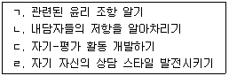
- ㄱ, ㄷ
- ㄴ, ㄹ
- ㄱ, ㄴ, ㄷ
- ㄴ, ㄷ, ㄹ
- ㄱ, ㄴ, ㄷ, ㄹ
(정답률: 알수없음)
25. 초보 수퍼바이지의 불안을 최소화하기 위해 수퍼바이저가 사용할 수 있는 전략을 모두 고른 것은?
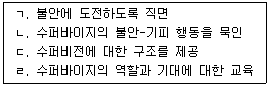
- ㄱ, ㄴ
- ㄷ, ㄹ
- ㄱ, ㄷ, ㄹ
- ㄴ, ㄷ, ㄹ
- ㄱ, ㄴ, ㄷ, ㄹ
(정답률: 알수없음)
26. 버나드(J. Bernard)와 굳이어(R. Goodyear)가 제시한 구조화된 집단 수퍼비전 모델의 단계이다. ( )의 내용을 순서대로 바르게 나열한 것은?
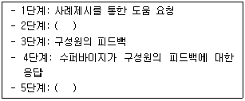
- 수퍼바이저의 피드백 - 구성원의 소감 발표
- 구성원의 토론 - 수퍼바이지의 소감 발표
- 수퍼바이저의 지도 - 구성원의 소감 발표
- 수퍼바이저의 피드백 - 수퍼바이지의 소감 발표
- 수퍼바이지에게 질문 - 수퍼바이저의 지도 및 토론
(정답률: 알수없음)
27. 수퍼바이지의 발달 수준에 따른 수퍼비전 개입으로 옳은 것은?
- 초급 - 직면적 개입을 주로 사용하기
- 초급 - 상담기술을 통합하도록 지도하기
- 중급 - 수퍼바이지의 자율성과 자신감 키우기
- 중급 - 수퍼바이지의 불안과 기대를 다루기
- 고급 - 수퍼비전 구조화를 명확하게 하기
(정답률: 알수없음)
28. 수퍼비전 발달 모델에 관한 설명으로 옳은 것은?
- 호간(R. Hogan)은 상담자의 발달을 6단계로 구분하였다.
- 스톨튼버그(C. Stoltenberg)는 상담과정 기술 등 6가지 상담활동 차원으로 상담자의 발달을 기술하였다.
- 브래들리(L. Bradley)와 라다니(N. Ladany)는 수퍼비전 모델들을 통합적 모델과 발달 모델로 구분하였다.
- 로간빌(C. Loganbill)은 상담자 발달의 종합적인 모델을 정체, 혼란, 통합의 3단계로 구분하였다.
- 홀로웨이(E. Holloway)는 상담자 발달 모델을 8단계로 구분하였다.
(정답률: 알수없음)
29. 로네스타드(M. Rønnestad)와 스코볼트(T. Skovholt)의 수퍼비전 발달 모델에 관한 설명으로 옳지 않은 것은?
- 여섯 가지 발달 상태(phases)로 구분하였다.
- 발달의 특징을 12가지 주제로 설명하였다.
- 공식적인 훈련과정에만 국한되지 않은 전생애 발달 모델이다.
- 마지막 단계는 20년 이상의 경력을 가진 원로전문가 상태이다.
- 수퍼바이저가 수퍼바이지의 발달과정을 이해하는데 도움을 준다.
(정답률: 알수없음)
30. 상담이론에 기초한 수퍼비전 모델 중 통합적 모델에 관한 설명으로 옳지 않은 것은?
- 가장 빈번하게 사용되는 수퍼비전 모델 중 하나이다.
- 통합의 일반적인 두 가지 경로는 기법절충과 경험연합이다.
- 여러 학파로부터 배울 수 있는 것을 시도한다.
- 통합을 하기 위해 다양한 이론에 정통할 필요가 있다.
- 통합적 심리치료 모델을 사용하는 임상가는 통합적 수퍼비전 모델을 사용하는 경우가 많다.
(정답률: 알수없음)
2과목: 청소년 관련 법과 행정
31. 청소년기본법상 청소년육성에 관한 기본계획에 대한 설명으로 옳지 않은 것은?
- 국가는 기본계획을 3년마다 수립하여야 한다.
- 국가 및 지방자치단체는 기본계획에 따라 연도별 시행계획을 각각 수립ㆍ시행하여야 한다.
- 기본계획에는 청소년육성의 분야별 주요 시책이 포함되어야 한다.
- 기본계획에는 청소년육성에 필요한 재원의 조달방법이 포함되어야 한다.
- 기본계획에는 청소년육성에 관한 기능의 조정이 포함되어야 한다.
(정답률: 알수없음)
32. 청소년기본법상 청소년육성 전담공무원에 관한 설명으로 옳지 않은 것은?
- 시ㆍ도, 시ㆍ군ㆍ구 및 읍ㆍ면ㆍ동에 청소년육성 전담공무원을 둘 수 있다.
- 청소년육성 전담공무원은 청소년지도사 또는 청소년상담사의 자격을 가진 사람으로 한다.
- 관계행정 기관, 청소년단체 및 청소년시설의 설치ㆍ운영자는 청소년육성 전담공무원의 업무 수행에 협조하여야 한다.
- 청소년육성 전담공무원은 관할구역의 청소년과 청소년지도자 등에 대하여 그 실태를 파악하고 필요한 지도를 하여야 한다.
- 청소년육성 전담공무원의 임용 등에 필요한 사항은 대통령령으로 정한다.
(정답률: 알수없음)
33. 청소년기본법상 청소년육성기금을 관리ㆍ운용하는 주체는?
- 지방자치단체장
- 청소년보호위원장
- 여성가족부장관
- 보건복지부장관
- 청소년육성재단
(정답률: 알수없음)
34. 청소년복지 지원법상 청소년증에 관한 설명으로 옳지 않은 것은?
- 9세 이상 18세 이하의 청소년에게 청소년증을 발급할 수 있다.
- 청소년증의 발급 주체는 소속 학교장이다.
- 청소년증 외에 청소년증과 동일한 명칭 또는 표시의 증표를 제작ㆍ사용하여서는 아니 된다.
- 청소년증의 발급에 필요한 사항은 여성가족부령으로 정한다.
- 청소년증을 다른 사람에게 양도하거나 빌려주어서는 아니 된다.
(정답률: 알수없음)
35. 청소년활동 진흥법상 지방자치단체장에게 계획을 사전에 신고하여야 하는 청소년수련활동은?
- 다른 법률에서 지도ㆍ감독 등을 받는 비영리 법인 또는 비영리 단체가 운영하는 수련활동
- 청소년이 부모 등 보호자와 함께 참여하는 수련활동
- 종교단체가 운영하는 수련활동
- 청소년수련시설에서 하는 참여인원 150명 이상의 비숙박형 수련활동
- 스카우트활동 육성에 관한 법률에 따른 스카우트 주관단체가 회원을 대상으로 하는 수련활동
(정답률: 알수없음)
36. 아동ㆍ청소년의 성보호에 관한 법률상 규정의 내용을 바르게 짝지은 것은?
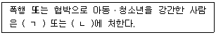
- ㄱ: 5년 이상의 유기징역, ㄴ: 3년 이상의 금고
- ㄱ: 사형, ㄴ: 10년 이상의 유기징역
- ㄱ: 무기징역, ㄴ: 3년 이상의 금고
- ㄱ: 사형, ㄴ: 무기징역
- ㄱ: 무기징역, ㄴ: 5년 이상의 유기징역
(정답률: 알수없음)
37. 청소년복지 지원법상 청소년복지시설은?
- 청소년특화시설
- 유스호스텔
- 청소년수련관
- 청소년이용시설
- 청소년쉼터
(정답률: 알수없음)
38. 청소년복지 지원법령상 선도후견인의 임무가 아닌 것은?
- 선도대상 청소년의 교육비 지원
- 선도대상 청소년의 선도내용 변경에 관한 의견제출
- 선도대상 청소년의 건강한 성장을 위한 조언
- 선도대상 청소년에 대한 상담 및 지원
- 선도대상 청소년의 선도기간 종료 및 연장에 관한 의견제출
(정답률: 알수없음)
39. 청소년활동 진흥법상 청소년수련활동 인증제도를 운영ㆍ관리하는 기관은?
- 청소년수련활동인증센터
- 청소년수련활동인증협회
- 한국청소년활동진흥원
- 한국청소년상담복지개발원
- 청소년상담복지센터
(정답률: 알수없음)
40. 청소년복지 지원법령상 청소년치료재활센터의 시설장 자격기준에 관한 설명으로 옳지 않은 것은?
- 청소년치료재활 관련 분야 박사학위를 취득하거나 박사과정을 이수한 사람으로서 청소년치료재활 관련 분야 실무경력이 5년 이상인 사람
- 국가 또는 지방자치단체에서 3급 이상 공무원으로서 청소년치료재활 관련 분야 실무에 7년 이상 종사한 사람
- 정신과전문의, 청소년상담사, 청소년지도사, 사회복지사, 임상심리사 관련 전문자격을 소지한 사람으로 관련 분야 실무경력이 7년 이상인 사람
- 청소년치료재활 관련 분야 석사학위를 취득한 사람으로서 청소년치료재활 관련 분야 실무경력이 7년 이상인 사람
- 청소년치료재활 관련 분야 실무경력이 10년 이상인 사람으로서 청소년 보호 및 지원에 대한 능력과 자질이 있다고 전문기관 및 단체가 추천하고 여성가족부장관 또는 지방자치단체장이 인정하는 사람
(정답률: 알수없음)
41. 청소년복지 지원법령상 이주배경청소년지원센터의 업무가 아닌 것은?
- 이주배경청소년에 대한 국민의 올바른 이해를 돕기 위한 사업
- 이주배경청소년의 실태에 관한 조사ㆍ연구
- 이주배경청소년의 사회 적응을 위한 프로그램 개발 및 보급
- 이주배경청소년과 그 부모에 대한 상담 및 교육
- 이주배경청소년을 위한 청소년육성기금의 조성
(정답률: 알수없음)
42. 위기청소년 지원사업이 아닌 것은?
- 위기청소년 긴급구조
- 일시보호소 운영
- 아웃리치사업
- 청소년어울림마당
- 1388청소년지원단
(정답률: 알수없음)
43. 청소년복지 지원법령상 시ㆍ도 청소년상담복지센터의 설치ㆍ운영 기준이 아닌 것은?
- 5개 이상의 개인상담실을 갖추어야 한다.
- 연면적 200제곱미터 이상의 독립된 공간을 갖추어야 한다.
- 14명 이상의 직원으로 운영하여야 하되, 지역실정에 따라 탄력적으로 운영할 수 있다.
- 3인 이상의 청소년상담사를 반드시 두어야 한다.
- 1개 이상의 집단상담 및 심리검사실을 갖추어야 한다.
(정답률: 알수없음)
44. 청소년동반자(YC)가 될 수 있는 사람을 모두 고른 것은?
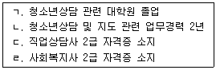
- ㄱ, ㄴ
- ㄷ, ㄹ
- ㄱ, ㄴ, ㄷ
- ㄴ, ㄷ, ㄹ
- ㄱ, ㄴ, ㄷ, ㄹ
(정답률: 알수없음)
45. 청소년복지 지원법령상 지역사회 청소년통합지원체계의 필수연계기관이 아닌 것은?
- 소방서
- 지방고용노동청 및 지청
- 공공보건의료기관 및 보건소
- 시ㆍ도교육청 및 교육지원청
- 청소년복지시설 및 청소년지원시설
(정답률: 알수없음)
46. 청소년 보호법령상 초ㆍ중ㆍ고 방학기간 중 청소년 시청 보호시간대는?
- 오전 6시부터 오후 9시까지
- 오전 6시부터 오후 10시까지
- 오전 7시부터 오후 10시까지
- 오전 7시부터 오후 11시까지
- 오전 8시부터 오후 10시까지
(정답률: 알수없음)
47. 청소년 보호법상 청소년유해매체물에 대하여 청소년유해표시를 하여야 하는 자를 정하고 있는 법률을 모두 고른 것은?
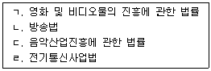
- ㄷ, ㄹ
- ㄱ, ㄴ, ㄷ
- ㄱ, ㄴ, ㄹ
- ㄴ, ㄷ, ㄹ
- ㄱ, ㄴ, ㄷ, ㄹ
(정답률: 알수없음)
48. 아동ㆍ청소년의 성보호에 관한 법령상 아동ㆍ청소년대상 성범죄의 수사절차에서 수사기관이 취해야 할 보호조치로 옳은 것을 모두 고른 것은?
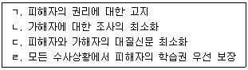
- ㄱ, ㄷ
- ㄱ, ㄹ
- ㄴ, ㄷ
- ㄱ, ㄴ, ㄷ
- ㄱ, ㄷ, ㄹ
(정답률: 알수없음)
49. 청소년 보호법상 금지되는 청소년 유해행위가 아닌 것은?
- 영리를 목적으로 청소년의 장애나 기형 등의 모습을 일반인들에게 관람시키는 행위
- 청소년을 위험한 스포츠활동에 참여시키는 행위
- 청소년에게 구걸을 시키거나 청소년을 이용하여 구걸하는 행위
- 흥행을 목적으로 청소년에게 음란한 행위를 하게 하는 행위
- 청소년을 학대하는 행위
(정답률: 알수없음)
50. 아동ㆍ청소년의 성보호에 관한 법률상 규정의 내용을 바르게 짝지은 것은?
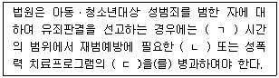
- ㄱ: 300, ㄴ: 수강명령, ㄷ: 이수명령
- ㄱ: 500, ㄴ: 수강명령, ㄷ: 이수명령
- ㄱ: 500, ㄴ: 강제이수, ㄷ: 이수강제
- ㄱ: 600, ㄴ: 의무이수, ㄷ: 수강이수
- ㄱ: 600, ㄴ: 이수명령, ㄷ: 수강명령
(정답률: 알수없음)
51. 청소년 보호법상 청소년유해업소에 관한 설명으로 옳지 않은 것을 모두 고른 것은?
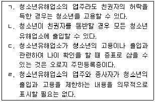
- ㄷ
- ㄱ, ㄴ
- ㄴ, ㄹ
- ㄱ, ㄴ, ㄷ
- ㄱ, ㄴ, ㄷ, ㄹ
(정답률: 알수없음)
52. 아동ㆍ청소년의 성보호에 관한 법률상 15세의 비장애 아동ㆍ청소년대상 성범죄의 공소시효 진행시기는?
- 해당 성범죄의 신고가 접수된 날
- 해당 성범죄가 발생한 날
- 해당 성범죄의 수사가 진행된 날
- 해당 성범죄로 피해를 당한 아동ㆍ청소년이 성년에 달한 날
- 공소시효 없음
(정답률: 알수없음)
53. 소년법상 보호처분이 아닌 것은?
- 수강명령
- 사회봉사명령
- 치료명령
- 보호관찰
- 소년원 송치
(정답률: 알수없음)
54. 소년법 및 청소년 보호법이 정하는 연령규정을 바르게 짝지은 것은?
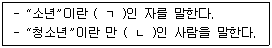
- ㄱ: 15세 미만, ㄴ: 18세 미만
- ㄱ: 18세 미만, ㄴ: 18세 미만
- ㄱ: 18세 미만, ㄴ: 19세 미만
- ㄱ: 19세 미만, ㄴ: 19세 미만
- ㄱ: 20세 미만, ㄴ: 20세 미만
(정답률: 알수없음)
55. 청소년기본법령상 청소년상담사 보수교육에 관한 내용을 바르게 짝지은 것은?
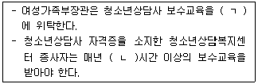
- ㄱ: 한국청소년상담복지개발원, ㄴ: 8
- ㄱ: 시ㆍ도 청소년상담복지센터, ㄴ: 8
- ㄱ: 한국청소년상담복지개발원, ㄴ: 10
- ㄱ: 시ㆍ도 청소년상담복지센터, ㄴ: 10
- ㄱ: 시ㆍ도 청소년상담복지센터, ㄴ: 12
(정답률: 알수없음)
56. 아동ㆍ청소년의 성보호에 관한 법률상 규정내용을 바르게 짝지은 것은?
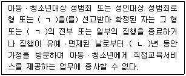
- ㄱ: 보호관찰, ㄴ: 5
- ㄱ: 보호관찰, ㄴ: 10
- ㄱ: 보호관찰, ㄴ: 15
- ㄱ: 치료감호, ㄴ: 10
- ㄱ: 치료감호, ㄴ: 20
(정답률: 알수없음)
57. 학교폭력예방 및 대책에 관한 법률상 내용으로 옳은 것은?
- 학교폭력대책지역협의회는 전체위원의 과반수를 학부모대표로 위촉하여야 한다.
- 시ㆍ군ㆍ구에 학교폭력대책지역위원회를 둔다.
- 시ㆍ도에 학교폭력대책자치위원회를 둔다.
- 학교폭력대책위원회는 국무총리 소속이다.
- 학교별로 학교폭력대책지역협의회를 둔다.
(정답률: 알수없음)
58. 여성가족부가 추진하는 인터넷ㆍ스마트폰 중독 위험군 사후조치 사업에 해당하지 않는 것은?
- 심리상담치료
- 병원연계치료
- 공존질환검사
- 인터넷치유캠프
- 청소년자립지원관 입소
(정답률: 알수없음)
59. 청소년 쉼터의 종류에 따른 보호기간을 바르게 짝지은 것은? (단, 연장기간은 고려하지 않음)
- 일시쉼터: 7일 이내, 단기쉼터: 1개월 이내
- 일시쉼터: 15일 이내, 단기쉼터: 3개월 이내
- 단기쉼터: 1개월 이내, 중장기쉼터: 3년 이내
- 단기쉼터: 3개월 이내, 중장기쉼터: 3년 이내
- 일시쉼터: 7일 이내, 중장기쉼터: 1년 이내
(정답률: 알수없음)
60. 청소년상담사 관련 각 법령이 다루고 있는 내용이 바르게 연결되지 않은 것은?
- 청소년기본법 - 청소년지도자 양성
- 청소년복지 지원법 - 특별지원 대상 청소년
- 청소년 보호법 - 아동ㆍ청소년 매매행위
- 아동ㆍ청소년의 성보호에 관한 법률 - 신고의무자에 대한 교육
- 청소년활동 진흥법 - 청소년수련시설의 종합평가
(정답률: 알수없음)
3과목: 상담연구방법론의 실제
61. 연구자가 연구 계획 시 고려해야 할 윤리적인 문제가 아닌 것은?
- 표본 수가 충분한가에 대한 고려
- 사전동의에 대한 고려
- 비밀보장 및 사생활 보호에 대한 고려
- 처치여부에 따른 연구 참여자의 혜택과 손실에 대한 고려
- 중도탈락의 권리에 대한 고려
(정답률: 알수없음)
62. 집중경향 또는 변산도에 관한 설명으로 옳지 않은 것은?
- 모든 값이 동일한 변인의 변량은 1이다.
- 산술평균은 극단값(outlier)의 영향을 크게 받는다.
- 표준편차는 변량의 양의 제곱근이다.
- 50% 절삭평균은 중앙값과 동일하다.
- 모든 값에 일정한 수를 더하더라도 변량은 변하지 않는다.
(정답률: 알수없음)
63. 질적연구와 구분되는 양적연구의 특징으로 볼 수 없는 것은?
- 실증적인 접근
- 가설검증의 활용
- 해석학적인 접근
- 인위적인 상황에서의 자료 수집
- 연구결과의 전집에 대한 높은 일반화 가능성
(정답률: 알수없음)
64. 다음에 제시된 내용이 공통적으로 설명하는 것은?
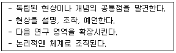
- 가설
- 구인
- 상식
- 경험
- 이론
(정답률: 알수없음)
65. 지역 청소년상담복지센터에서 남자 고등학생의 성매매 비율을 파악하기 위해 그 지역에 재학 중인 모든 남자 고등학생에 대한 목록을 만들고 무선적으로 1,000명을 표집하였다. 이에 해당하는 표집방법은?
- 할당(quota)표집
- 눈덩이(snowballing)표집
- 우연적(accidental)표집
- 의도적(purposive)표집
- 단순무선(simple random)표집
(정답률: 알수없음)
66. 정규분포에 관한 설명으로 옳지 않은 것은?
- 왜도는 0이다.
- 첨도는 0이다.
- 좌우 대칭이다.
- 표준정규분포의 경우, t분포와 일치한다.
- 평균과 표준편차에 따라 그 모양이 달라진다.
(정답률: 알수없음)
67. 동간변인(interval variable)에 관한 설명으로 옳은 것을 모두 고른 것은?
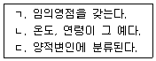
- ㄴ
- ㄷ
- ㄱ, ㄴ
- ㄱ, ㄷ
- ㄱ, ㄴ, ㄷ
(정답률: 알수없음)
68. 검사도구의 신뢰도를 제고하기 위한 것으로 옳은 것을 모두 고른 것은?
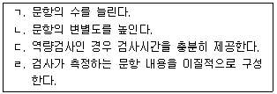
- ㄱ, ㄴ
- ㄴ, ㄹ
- ㄷ, ㄹ
- ㄱ, ㄴ, ㄷ
- ㄱ, ㄷ, ㄹ
(정답률: 알수없음)
69. 실험연구에서 내적타당도를 저해하는 요인이 아닌 것은?(문제 오류로 확정답안 발표시 모두 정답처리 되었습니다. 여기서는 1번을 누르면 정답 처리 됩니다.)
- 성숙 효과
- 통계적 회귀
- 연구대상의 손실
- 모방(확산)효과
- 존 헨리(John Henry) 효과
(정답률: 알수없음)
70. 1종 오류 또는 2종 오류에 관한 설명으로 옳은 것은?
- 2종 오류가 1종 오류보다 더 심각한 오류이다.
- 1종 오류는 영가설이 참일 때 대립가설을 채택하는 오류를 말한다.
- 1종 오류와 2종 오류를 동시에 낮출 수 있는 방법은 없다.
- 1종 오류는 1-α로 표현된다.
- 2종 오류는 1-β로 표현된다.
(정답률: 알수없음)
71. 질적연구의 타당성과 신뢰성을 평가하기 위한 기준을 모두 고른 것은?
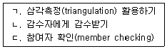
- ㄱ
- ㄷ
- ㄱ, ㄴ
- ㄴ, ㄷ
- ㄱ, ㄴ, ㄷ
(정답률: 알수없음)
72. 다음의 예에 해당하는 연구 형태는?
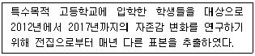
- 동류집단 분석(cohort study)
- 경향성 연구(trend study)
- 패널 연구(panel study)
- 시간표집 연구(time sampling study)
- 횡단적 연구(cross sectional study)
(정답률: 알수없음)
73. 연구자가 청소년상담사 자격시험의 합격 여부에 유의미한 영향을 미치는 변인을 알아보고자 대학원 성적 평균, 상담실무 경력 년 수, 나이를 사용하여 10,000명의 응시자의 기초자료를 분석하고자 할 때 적절한 통계 분석방법은?
- 요인분석
- 중다회귀분석
- 판별분석
- 정준상관분석
- 변량분석
(정답률: 알수없음)
74. 영가설을 기각할 가능성이 더 높아지는 경우를 모두 고른 것은?
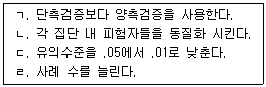
- ㄱ, ㄴ
- ㄱ, ㄷ
- ㄴ, ㄷ
- ㄴ, ㄹ
- ㄷ, ㄹ
(정답률: 알수없음)
75. 다음의 예에서 공통적으로 가장 크게 나타날 것으로 예측되는 오차는?
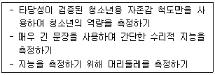
- 기대오차
- 무선오차
- 체계적 오차
- 표집오차
- 추정의 표준오차
(정답률: 알수없음)
76. 층화(stratified)표집과 할당(quota)표집의 차이를 가장 잘 설명한 것은?
- 최종 표본추출단계에서 층화표집은 무선으로 표본을 추출하지만 할당표집은 연구자가 주관적으로 표본을 추출한다.
- 최종 표본추출단계에서 할당표집은 무선으로 표본을 추출하지만 층화표집은 연구자가 주관적으로 표본을 추출한다.
- 할당표집은 전집 목록이 있을 때만 활용 가능하지만 층화표집은 전집 목록이 없어도 활용 가능하다.
- 층화표집은 전집 목록이 있을 때만 활용 가능하지만 할당표집은 전집 목록이 없어도 활용가능하다.
- 층화표집은 전집 내에 있는 기존 집단이 선발단위가 될 때 사용되지만 할당표집은 표본 내의 각 하위집단별 비율이 전집 내의 하위집단별 비율과 동일할 때 사용한다.
(정답률: 알수없음)
77. 다음의 예를 지칭하는 질적 연구방법은?
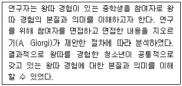
- 현상학적 연구
- 근거이론
- 합의적 질적연구(CQR)
- 문화기술지
- 전기 연구
(정답률: 알수없음)
78. 피어슨 적률상관계수에 관한 설명으로 옳은 것을 모두 고른 것은?
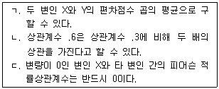
- ㄴ
- ㄷ
- ㄱ, ㄴ
- ㄱ, ㄷ
- ㄱ, ㄴ, ㄷ
(정답률: 알수없음)
79. .80인 신뢰도 값에 대한 해석으로 옳은 것을 모두 고른 것은?
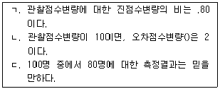
- ㄱ
- ㄷ
- ㄱ, ㄴ
- ㄴ, ㄷ
- ㄱ, ㄴ, ㄷ
(정답률: 알수없음)
80. 다음의 예에 해당하는 검사 타당도는?
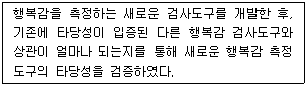
- 안면타당도
- 공인타당도
- 예언타당도
- 결과타당도
- 내용타당도
(정답률: 알수없음)
81. 다음에서 공통적으로 설명하고 있는 분석방법은?
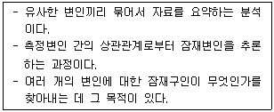
- 변량분석
- 경로분석
- 회귀분석
- 요인분석
- 다층모형분석
(정답률: 알수없음)
82. 기존의 프로그램에 비해 새롭게 개발한 성취도 향상 프로그램의 효과가 남녀에 따라서 다르게 나타나는지를 검증하기 위해 요인설계를 적용하고자 한다. 효과 검증에 활용할 수 있는 통계 분석방법으로 가장 적합한 것은?
- 판별분석
- 공변량분석
- 확인적 요인분석
- 이원변량분석
- 반복측정 변량분석
(정답률: 알수없음)
83. 200명의 내담자를 대상으로 ‘X, Y, Z’라는 세 가지 상담기법 중 가장 선호하는 것을 선택하게 하였다. 관찰빈도를 요약한 결과가 다음과 같을 때, (A)에 해당하는 기대빈도는?
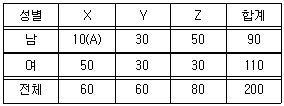
- 3
- 13
- 17
- 23
- 27
(정답률: 알수없음)
84. 다음에서 공통적으로 설명하고 있는 신뢰도 추정방법은?
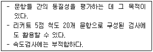
- K-R-20
- 카파계수
- 동형검사 신뢰도
- Cronbach 계수
- 검사 재검사 신뢰도
(정답률: 알수없음)
85. 다음의 절차에 따라서 진행한 연구에 해당하는 실험설계 방법은?
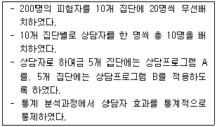
- 혼합(split-plot)설계
- 배속(nested)설계
- 요인(factorial)설계
- 라틴 정방형 설계
- 솔로몬 4집단 설계
(정답률: 알수없음)
86. 다음은 성취도에 대한 자존감과 사교육비의 효과를 검증하기 위해 중다회귀분석을 실시한 결과이다. 자존감과 사교육비 각각에서 백분위 10과 90에 위치한 학생에게 기대되는 성취도를 가장 적절히 도식화한 것은?
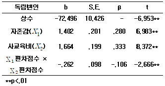
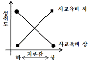
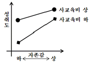
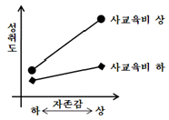
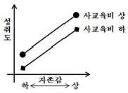
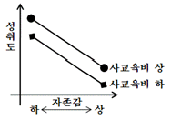
(정답률: 알수없음)
87. 자존감 향상 프로그램의 효과를 검증하기 위해 다음과 같은 두 개의 이질집단을 구성하여, 프로그램 적용 전과 적용 과정 및 적용 후에 동일한 자존감 검사로 총 4번을 반복측정하였다. 프로그램의 효과 검증에 활용할 수 있는 통계 분석방법으로 가장 적절한 것은? (단, O1, O2, O3, O4 : (양적척도의) 자존감 검사 실시, X : 새로운 자존감 프로그램 실시)
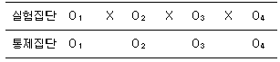
- 카이제곱검정
- 다집단 잠재성장모형
- 잠재계층분석
- 잠재프로파일분석
- 다항 로지스틱 회귀분석
(정답률: 알수없음)
88. 변량을 '편차제곱의 평균(
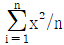
단, x는 편차점수)'으로 정의할 때, 2개 또는 6개의 측정값을 가진 A, B, C, D의 변량에 관한 설명으로 옳은 것을 모두 고른 것은?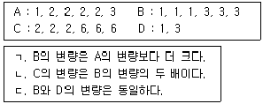
- ㄱ
- ㄴ
- ㄱ, ㄷ
- ㄴ, ㄷ
- ㄱ, ㄴ, ㄷ
(정답률: 알수없음)
89. 상담사 A는 자살시도 경험 유무에 대한 애착불안, 우울, 교우관계의 효과를 검증하기 위해 로지스틱 회귀분석을 실시하였다. 분석결과가 다음과 같을 때, 유의수준 1%에서 이를 바르게 해석한 것은?
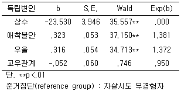
- 세 독립변인은 모두 자살시도 경험 유무에 유의미한 효과를 가진다.
- 타 독립변인을 통제했을 때, 애착불안이 1단위 증가함에 따라 자살시도 유경험자에 포함될 확률은 .323만큼 커진다.
- 타 독립변인을 통제했을 때, 애착불안이 1단위 증가함에 따라 자살시도 유경험자에 포함될 확률은 1.381배 더 높아진다.
- 타 독립변인을 통제했을 때, 우울이 1단위 증가함에 따라 자살시도 무경험자에 포함될 확률에 대한 자살시도 유경험자에 포함될 확률의 비는 .316배 더 높아진다.
- 타 독립변인을 통제했을 때, 우울이 1단위 증가함에 따라 자살시도 무경험자에 포함될 확률에 대한 자살시도 유경험자에 포함될 확률의 비는 1.372배 더 높아진다.
(정답률: 알수없음)
90. 양류상관(point-biserial correlation)계수에 관한 설명으로 옳은 것을 모두 고른 것은?
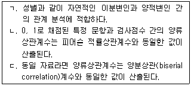
- ㄴ
- ㄷ
- ㄱ, ㄴ
- ㄱ, ㄷ
- ㄱ, ㄴ, ㄷ
(정답률: 알수없음)